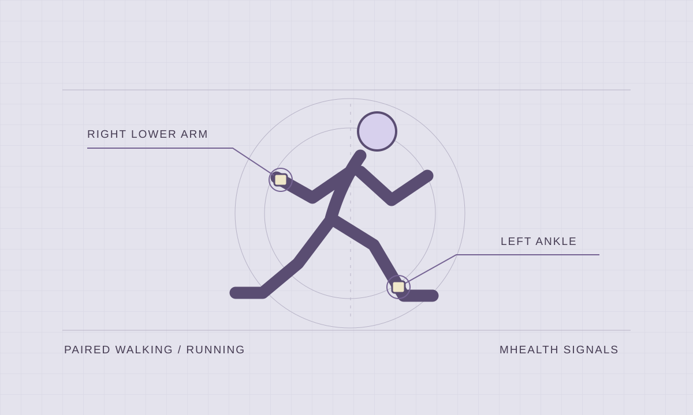
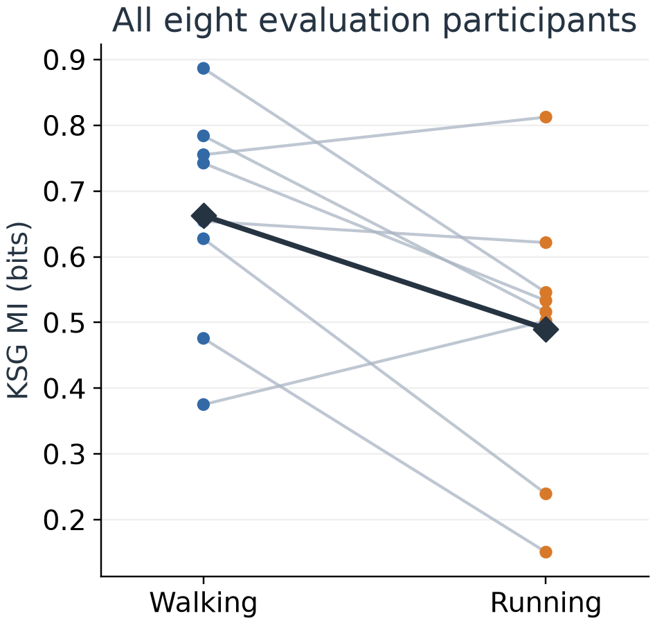

Information
in motion.
How does the relationship between arm and ankle motion change when the same person goes from walking to running?
My role. I analysed public wearable sensor recordings. I prepared the arm and ankle signals, compared walking and running for each person, and checked how much my results depended on the method I used.

01 / ANALYSIS DESIGN
Compare each person with themselves
Paired comparison. I used recordings from two people to pilot the analysis, then compared one walking and one running bout for each of eight other people. I filtered the acceleration data, kept the middle 50 seconds of each bout and resampled to 25 Hz.
Two measures. I used mutual information (MI) to measure how much information the arm and ankle signals shared at the same instant, comparing nearest-neighbour and Gaussian estimates. With transfer entropy (TE), I asked whether each signal helped predict the other 40 ms later, beyond what its own recent history already told me.
Checks. I ran the transfer entropy analysis on simulated signals with a known one-way influence. I also checked how much the estimates changed when I varied the length of the target signal’s history.
02 / RESULTS AND LIMITS
The estimator changed the picture

Running minus walking averaged −0.172 bits for nearest-neighbour MI and +0.075 bits for Gaussian MI, a descriptive comparison. The three primary tests had a Holm-adjusted p of .164, leaving the activity contrasts inconclusive.
Why I added a control. The two MI estimates pointed in opposite directions. I applied the same random phase shift to both signals at each frequency, keeping their spectra and covariance fixed. Under this control, the nearest-neighbour difference went from −0.172 to +0.074 bits. The direction could change even with those properties held fixed.
Running minus walking averaged +0.042 bits for arm-to-ankle TE and −0.047 bits in the reverse direction. A shared gait rhythm could drive both signals, so these directional estimates describe prediction under the chosen model. Direct causation remains unresolved.